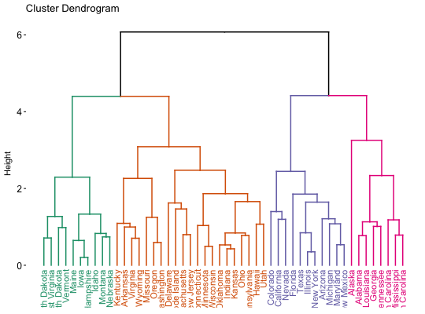
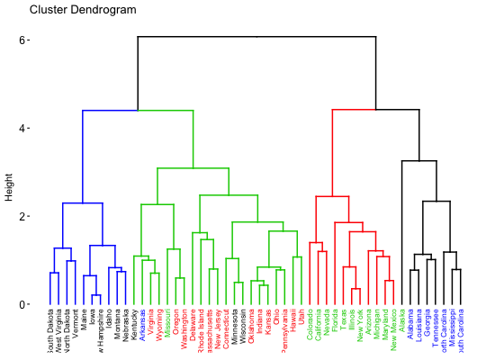

Enhanced Visualization of Dendrogram
Draws easily beautiful dendrograms using either R base plot or ggplot2. Provides also an option for drawing a circular dendrogram and phylogenic trees.
fviz_dend(x, k = NULL, h = NULL, k_colors = NULL, palette = NULL, show_labels = TRUE, color_labels_by_k = TRUE, label_cols = NULL, labels_track_height = NULL, repel = FALSE, lwd = 0.7, type = c("rectangle", "circular", "phylogenic"), phylo_layout = "layout.auto", rect = FALSE, rect_border = "gray", rect_lty = 2, rect_fill = FALSE, lower_rect, horiz = FALSE, cex = 0.8, main = "Cluster Dendrogram", xlab = "", ylab = "Height", sub = NULL, ggtheme = theme_classic(), ...)
Arguments
- x
- an object of class dendrogram, hclust, agnes, diana, hcut or hkmeans.
- k
- the number of groups for cutting the tree.
- h
- a numeric value. Cut the dendrogram by cutting at height h. (k overrides h)
- k_colors, palette
- a vector containing colors to be used for the groups. It should contains k number of colors. Allowed values include also "grey" for grey color palettes; brewer palettes e.g. "RdBu", "Blues", ...; and scientific journal palettes from ggsci R package, e.g.: "npg", "aaas", "lancet", "jco", "ucscgb", "uchicago", "simpsons" and "rickandmorty".
- show_labels
- a logical value. If TRUE, leaf labels are shown. Default value is TRUE.
- color_labels_by_k
- logical value. If TRUE, labels are colored automatically by group when k != NULL.
- label_cols
- a vector containing the colors for labels.
- labels_track_height
- a positive numeric value for adjusting the room for the labels. Used only when type = "rectangle".
- repel
- logical value. Use repel = TRUE to avoid label overplotting when type = "phylogenic".
- lwd
- a numeric value specifying branches and rectangle line width.
- type
- type of plot. Allowed values are one of "rectangle", "triangle", "circular", "phylogenic".
- phylo_layout
- the layout to be used for phylogenic trees. Default value
is "layout.auto". Allowed values include:
layout.auto,layout_with_drl,layout_as_tree,layout.gem,layout.mdsandlayout_with_lgl. - rect
- logical value specifying whether to add a rectangle around groups. Used only when k != NULL.
- rect_border, rect_lty
- border color and line type for rectangles.
- rect_fill
- a logical value. If TRUE, fill the rectangle.
- lower_rect
- a value of how low should the lower part of the rectangle around clusters. Ignored when rect = FALSE.
- horiz
- a logical value. If TRUE, an horizontal dendrogram is drawn.
- cex
- size of labels
- main, xlab, ylab
- main and axis titles
- sub
- Plot subtitle. If NULL, the method used hierarchical clustering is shown. To remove the subtitle use sub = "".
- ggtheme
- function, ggplot2 theme name. Default value is theme_classic(). Allowed values include ggplot2 official themes: theme_gray(), theme_bw(), theme_minimal(), theme_classic(), theme_void(), ....
- ...
- other arguments to be passed to the function plot.dendrogram()
Value
an object of class fviz_dend which is a ggplot with the attributes "dendrogram" accessible using attr(x, "dendrogram"), where x is the result of fviz_dend().
Examples
# Load and scale the data data(USArrests) df <- scale(USArrests) # Hierarchical clustering res.hc <- hclust(dist(df)) # Default plot fviz_dend(res.hc)# Cut the tree fviz_dend(res.hc, cex = 0.5, k = 4, color_labels_by_k = TRUE)# Don't color labels, add rectangles fviz_dend(res.hc, cex = 0.5, k = 4, color_labels_by_k = FALSE, rect = TRUE)# Change the color of tree using black color for all groups # Change rectangle border colors fviz_dend(res.hc, rect = TRUE, k_colors ="black", rect_border = 2:5, rect_lty = 1)# Customized color for groups fviz_dend(res.hc, k = 4, k_colors = c("#1B9E77", "#D95F02", "#7570B3", "#E7298A"))# Color labels using k-means clusters km.clust <- kmeans(df, 4)$cluster fviz_dend(res.hc, k = 4, k_colors = c("blue", "green3", "red", "black"), label_cols = km.clust[res.hc$order], cex = 0.6)